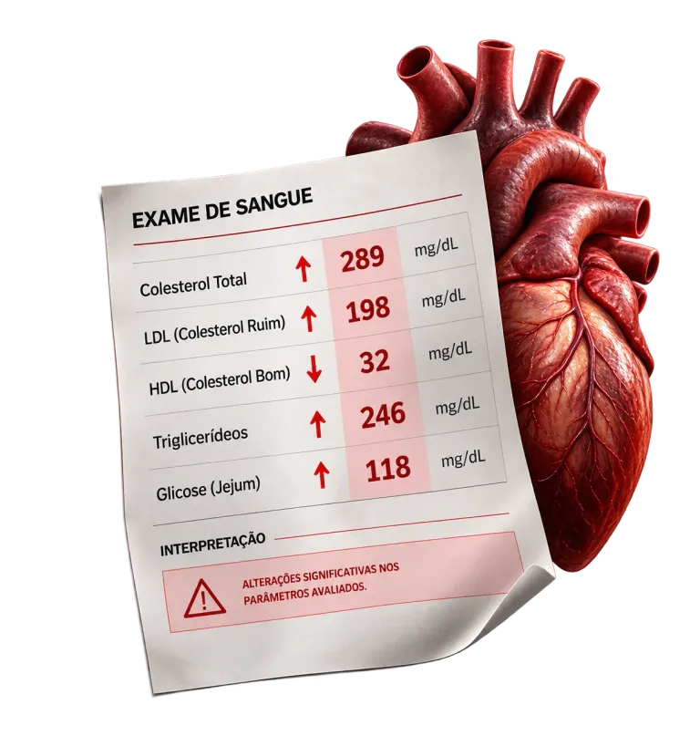
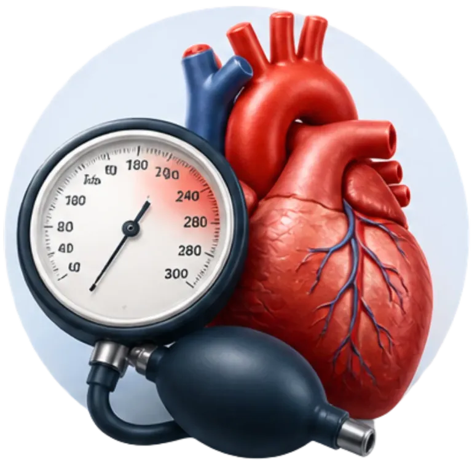
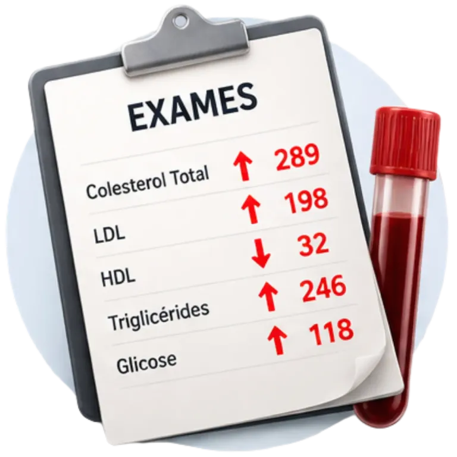

Dr Paulo Cardoso - Cardiologista
Depois de 20 anos tratando o coração de milhares de pessoas, descobri que os infartos não surgem do nada. Seu corpo sempre avisa.
Agende uma consulta com um médico integrativo que olha além do exame. Seu coração nunca é um número isolado: é inflamação, é o que você come, é a noite mal dormida, é o estresse em silêncio.
Quero Agendar uma ConsultaVocê se reconhece em alguma dessas situações?
- Seus exames vieram alterados (colesterol, pressão) e cada médico te diz uma coisa diferente
- Você sente palpitação, aperto no peito ou cansaço e não sabe se é ansiedade ou o coração
- Já foi ao cardiologista, ouviu que "está tudo bem" e continua com a sensação de que algo não foi investigado.
- Tem histórico de infarto na família e vive com medo de que aconteça com você.
- Toma vários remédios e gostaria de entender se todos continuam necessários.
- Quer se prevenir agora, antes de precisar tratar depois.
Se você respondeu "sim" a alguma delas, o problema talvez não seja falta de informação. É falta de alguém que junte as peças para o seu caso.

Um número isolado não conta a história inteira
O colesterol, a pressão e a glicose são pontos importantes. Mas cada um deles é a consequência de algo maior: como você dorme, o que come, como lida com o estresse, o que o seu corpo acumulou ao longo dos anos e o que a sua família te passou.
Abaixar um número sem entender o que está por trás dele é tratar só a parte visível do problema.
Na Luz da Vida, o Dr. Paulo une o rigor da cardiologia à Medicina Integrativa e Funcional para avaliar a pessoa inteira, não só o resultado do exame.
Quero Agendar uma ConsultaComo é a consulta com o Dr. Paulo?
Uma avaliação detalhada, sem pressa, em que ele analisa:
Seu histórico de saúde e o histórico da sua família

Seus fatores de risco cardiovascular

Seus exames, lidos em conjunto e no contexto da sua vida
Os medicamentos e suplementos que você já utiliza.
Seus hábitos: alimentação, sono, atividade física e estresse.
Se você respondeu "sim" a alguma delas, o problema talvez não seja falta de informação. É falta de alguém que junte as peças para o seu caso.
Essa consulta faz sentido para você se…
- Você tem colesterol alto, pressão oscilando ou outras alterações e quer entender a causa.
- Você sente sintomas e quer uma investigação séria, sem suposições.
- Você quer fazer um check-up cardiovascular com foco em prevenção e longevidade.
- Você cuida de alguém da família com problema cardíaco e quer entender melhor.
- Você pratica esporte, ou quer começar, e deseja segurança para isso.
- Você quer uma segunda opinião, ou revisar seus exames com calma.
Quem está do outro lado dessa avaliação?
Dr. Paulo Cardoso
Ao longo de mais de 20 anos de cardiologia, o Dr. Paulo Cardoso viu centenas de vezes o mesmo cenário: colesterol alto vira uma receita, pressão alta vira outra, mas poucas vezes alguém para para perguntar por que isso está acontecendo.
Foi dessa experiência que nasceu uma forma diferente de enxergar a cardiologia: não apenas controlar os números dos exames, mas compreender o paciente como um todo e investigar os fatores que podem estar por trás do problema.
Especializações e Formações:
- Graduação em Medicina
- Residência médica em Cardiologia
- Pós-graduação em Medicina e Estilo de Vida
- Pós-graduação com Dr. Lair Ribeiro
- Pós-graduação em Medicina do Trabalho
- Pós-graduação em Terapia Intensiva (UTI)
- Mais de 20 anos de atuação em consultório e ambiente hospitalar, incluindo casos de alta complexidade
Cardiologista Integrativo · CRM 142290 SP - RQE 30259 - RQE 30037
Atendimento presencial em São José dos Campos e Online.
O que torna a consulta diferente?
Cardiologistas Normais...
- Olhar para só um exame isolado
- Uma consulta corrida e genérica
- Sai da consulta sem entender o que está acontecendo
- Depende de terceiros para interpretar seu corpo
Na Luz da Vida com Dr. Paulo
- Análise completa do histórico, exames, hábitos e risco em conjunto
- Um atendimento detalhado, particular e com tempo para ouvir o seu caso individual
- Sair com clareza e um plano individualizado
- Aprende a reconhecer sinais que você pode acompanhar
Presencial ou Online
Escolha o formato que for melhor para você
Presencial na Clínica Luz da Vida
Atendimento na Luz da Vida, em R. Benedito Osvaldo Lecques, 51 - Sl 501 - Parque Res. Aquarius, São José dos Campos - SP, 12246-021
Online via Teleconsulta
Para quem mora em outra região, tem agenda apertada ou quer revisar exames e tirar dúvidas. Nossa equipe orienta você antes da consulta sobre como enviar seus exames e acessar a plataforma.